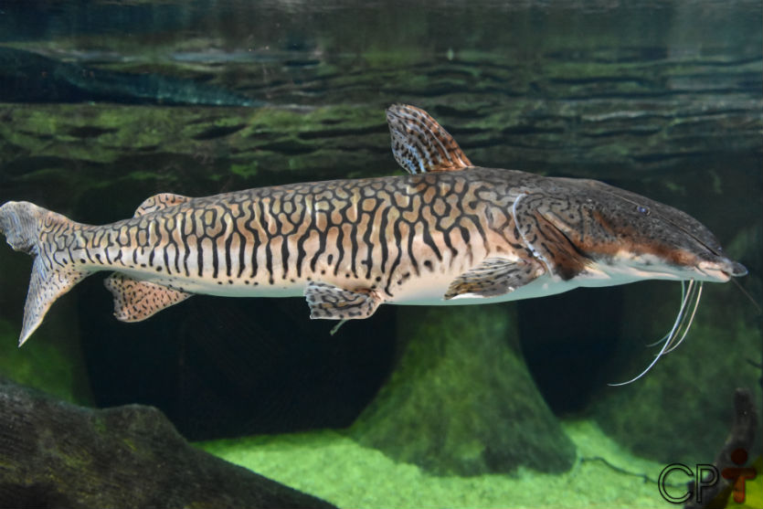
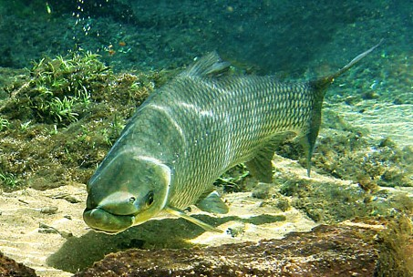
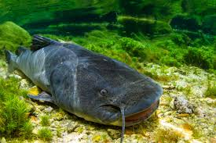
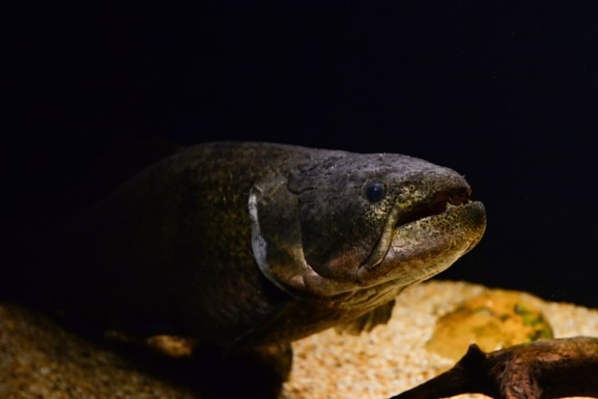

Surubim
Pseudoplatystoma corruscans

O surubim é um peixe de couro com corpo alongado e coloração acinzentada, marcado por manchas escuras que se assemelham a listras. É nativo das bacias Amazônica, Araguaia-Tocantins e Paraná-Paraguai.
Habitat
Habita grandes rios com fundo arenoso ou lodoso, preferindo áreas profundas com esconderijos.
Alimentação
Sua alimentação baseia-se principalmente em outros peixes menores, utilizando seus barbilhões sensíveis para detectar vibrações e odores em águas turvas ou escuras.
Comportamento
Peixe de hábitos noturnos, durante o dia permanece escondido em estruturas como troncos e barrancos.
Perigo de extinção
Está em declínio devido à pesca excessiva, barragens e poluição dos rios, sendo vulnerável em várias regiões.
Curiosidades
Seus longos barbilhões ajudam a encontrar alimento em ambientes com baixa visibilidade.
Curimbatá
Prochilodus lineatus

O curimbatá é um peixe de escamas prateadas e corpo alongado, comum em rios e lagos da bacia Paraná-Paraguai. Possui boca pequena e protrátil, adaptada para sua alimentação.
Habitat
Habita rios de grande porte, preferindo locais profundos com estruturas como troncos e barrancos.
Alimentação
É um peixe iliófago, alimentando-se principalmente de matéria orgânica em decomposição presente no lodo do fundo.
Comportamento
Geralmente vive em cardumes, especialmente durante as migrações reprodutivas. Possui hábitos bentônicos(seres vivos que vivem no fundo de corpos aquáticos), passando a maior parte do tempo próximo ao fundo em busca de alimento.
Perigo de extinção
Embora não esteja em alto risco em todas as áreas, suas populações têm diminuído devido à destruição de habitat por desmatamento, barragens, poluição e pesca, gerando preocupação em algumas regiões do Centro-Oeste.
Curiosidades
Sua alimentação contribui para a ciclagem de nutrientes nos ecossistemas aquáticos, atuando como um "faxineiro" dos rios ao processar a matéria orgânica.
Jaú
Zungaro jahu

O jaú é um dos maiores peixes de couro de água doce da América do Sul. Corpo robusto e cilíndrico, cabeça grande e achatada. Dorso cinza escuro a preto, ventre claro, barbilhões longos e grossos.
Habitat
Habita grandes rios com águas profundas e correnteza forte. Prefere áreas com pedras, troncos, barrancos. Encontrado nas bacias Amazônica, Araguaia-Tocantins e Paraná-Paraguai.
Alimentação
É um predador voraz, alimentando-se principalmente de outros peixes grandes, como piaus, curimbatás e até mesmo outras espécies de bagres menores. Sua dieta também pode incluir crustáceos e, ocasionalmente, pequenos mamíferos ou aves que caem na água.
Comportamento
O jaú é um peixe solitário e de hábitos noturnos, passando a maior parte do dia em tocas ou áreas abrigadas no fundo dos rios. À noite, torna-se ativo na busca por alimento. É conhecido por sua força e pode realizar longas migrações em busca de áreas de reprodução ou alimentação.
Perigo de extinção
O jaú enfrenta um alto risco de extinção em grande parte de sua distribuição por causa da pesca predatória, combinada com a destruição de seus habitats por barragens que dificultam suas migrações e alteram o fluxo do rio, a poluição da água e a baixa taxa de reprodução.
Curiosidades
Uma curiosidade sobre o jaú é seu crescimento lento e sua longevidade. Estima-se que alguns indivíduos possam viver por várias décadas e atingir tamanhos impressionantes, tornando-os vulneráveis à sobrepesca, já que a reposição populacional é lenta.
Traíra
Hoplias malabaricus

Corpo cilíndrico, cabeça achatada, boca larga com dentes afiados. Coloração marrom a verde-oliva com manchas escuras. Ótima camuflagem.
Habitat
Habita uma grande variedade de ambientes de água doce, incluindo rios, lagos, lagoas, açudes e brejos, com preferência por áreas com vegetação aquática densa e fundo lodoso, onde pode se camuflar e encontrar abrigo. É encontrada em grande parte da América do Sul.
Alimentação
Habita uma grande variedade de ambientes de água doce, incluindo rios, lagos, lagoas, açudes e brejos, com preferência por áreas com vegetação aquática densa e fundo lodoso, onde pode se camuflar e encontrar abrigo. É encontrada em grande parte da América do Sul.
Comportamento
A traíra é um peixe territorial e agressivo, especialmente durante a época de reprodução. Costuma ficar escondida em meio à vegetação aquática, troncos ou buracos no barranco, esperando suas presas. É capaz de sobreviver em ambientes com baixos níveis de oxigênio, podendo ser encontrada em lagoas marginais e áreas alagadas.
Perigo de extinção
A traíra não é considerada uma espécie em alto risco de extinção devido à sua adaptabilidade e ampla distribuição, algumas populações podem sofrer pressão devido à pesca excessiva e à degradação de seus habitats, como o assoreamento de lagoas e a destruição de áreas de vegetação marginal.
Curiosidades
Uma curiosidade marcante da traíra é sua capacidade de sobreviver por algum tempo fora da água, desde que sua pele permaneça úmida. Isso permite que ela se desloque entre poças isoladas durante períodos de seca. Além disso, seus dentes afiados podem causar mordidas dolorosas, exigindo cuidado ao manuseá-la.